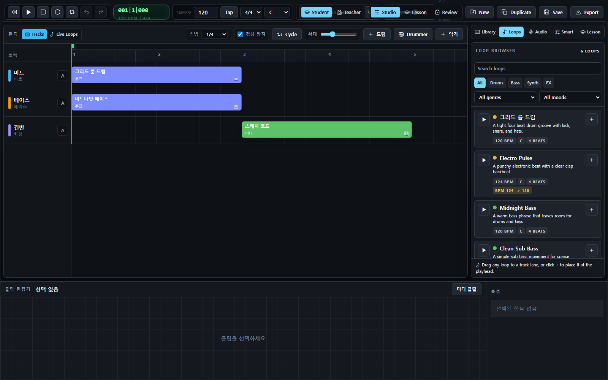

Quick Start User's Manual - Korean
GarageBand Copy
퀵스타트 설명서
처음 실행한 사용자가 10분 안에 루프를 놓고, MIDI/오디오를 조금 편집하고, 믹스 후 WAV와 프로젝트 파일을 받을 수 있도록 만든 초단기 안내서입니다.
01설정
02루프
03편집
04녹음
05믹스
06공유
실제 앱 화면 한눈에 보기

퀵스타트 화면 지도
처음에는 이 세 영역만 기억하세요. 위는 조종석, 가운데는 편곡판, 오른쪽은 소리 재료함입니다.
1. 30초 준비: 프로젝트 기본값 정하기
그림 1. 곡 설정 체크
Transport Bar에서 곡의 속도와 기준 조성을 먼저 정합니다.
New를 눌러 새 프로젝트를 만듭니다.- 프로젝트 이름을 클릭해 곡 제목을 입력합니다.
Tempo를 100-130 사이로 정합니다.- 박자표는
4/4, Key는C또는Am으로 시작합니다. - 녹음할 계획이 있으면
Metro와Count-in 1 bar를 켭니다.
2. 2분: 드럼과 베이스 루프 배치
그림 2. Loop Browser에서 Timeline으로
Loops 탭에서 드럼과 베이스를 골라 곡의 기본 리듬을 만듭니다.
- 오른쪽 Studio Panel에서
Loops탭을 엽니다. - 검색창에
drum을 입력하고 마음에 드는 루프를 미리 듣습니다. +버튼을 누르거나 Timeline의 비트 트랙으로 드래그합니다.- 검색창에
bass를 입력하고 베이스 루프를 두 번째 트랙에 놓습니다. - 드럼과 베이스 클립의 시작 위치와 길이를 맞춥니다.
3. 2분: MIDI 또는 Drummer로 멜로디 추가
그림 3. MIDI 편집 빠른 흐름
Piano Roll, Touch, Drummer 중 하나만 써도 멜로디나 리듬 변화를 만들 수 있습니다.
- Timeline에서 악기 트랙을 선택합니다.
- 하단 Clip Editor에서
미디 클립을 눌러 새 MIDI 클립을 만듭니다. Piano Roll에서 노트를 클릭해 입력하거나Touch를 눌러 키보드/코드 스트립을 사용합니다.- 드럼 패턴을 빠르게 만들려면 Timeline 상단
Drummer버튼을 누릅니다. - 노트가 어긋나면 Quantize를 적용하고, Key에 맞추려면 Scale Lock을 사용합니다.
4. 선택 사항 2분: 오디오 녹음
그림 4. Audio 트랙 녹음
마이크 녹음이 필요할 때만 이 단계를 진행합니다.
- 오른쪽
Audio탭을 엽니다. Track버튼으로 오디오 트랙을 추가합니다.- 녹음할 트랙의
Record enable을 켭니다. - 상단 Record 버튼을 눌러 녹음하고, Stop으로 끝냅니다.
- 하단 파형 편집에서 Trim, Fade, Normalize를 적용합니다.
5. 2분: 들리게 믹스하기
그림 5. 최소 믹스 체크
퀵스타트에서는 볼륨, 팬, 마스터 리미터만 먼저 확인해도 충분합니다.
- 오른쪽
Smart탭을 엽니다. - 드럼이 너무 크면 비트 트랙 fader를 조금 내립니다.
- 베이스는 중앙에 두고, 건반/신스는 살짝 좌우로 펼칩니다.
- 보컬/녹음 트랙은 다른 악기보다 조금 앞에 들리게 둡니다.
- Master Limiter를 켜고 전체 피크가 너무 강하지 않은지 확인합니다.
- 필요하면 Timeline 트랙의
A버튼으로 Automation Lane을 열어 볼륨 변화를 만듭니다.
6. 1분: WAV와 프로젝트 백업 받기
그림 6. Share Export
상단 Export 버튼은 Mix, Stems ZIP, Project 파일, Import를 한 번에 처리하는 Share 모달을 엽니다.
- 상단 오른쪽
Export를 누릅니다. Format은 WAV로 둡니다. 특정 반복 구간만 필요하면 Cycle을 켠 뒤 Range를 Cycle로 선택합니다.Mix를 눌러 완성 WAV를 받습니다.- 협업이나 교사용 피드백이 필요하면
Stems ZIP도 받습니다. - 나중에 이어서 작업하려면
Project를 눌러.webband.json백업을 저장합니다.
7. 막힐 때 바로 확인
그림 7. 문제 해결 미니맵
퀵스타트 중 가장 자주 만나는 문제 세 가지입니다.
소리가 안 나요트랙 Mute/Solo, Master volume, 브라우저 탭 음소거, 시스템 출력 장치를 확인합니다.
녹음이 안 돼요마이크 권한, Audio 트랙 존재 여부, Record enable, Count-in 상태를 확인합니다.
Export가 짧아요Range가 Cycle인지 확인합니다. 전체 곡은 Full로 내보냅니다.
작업을 옮기고 싶어요Export -> Project로
.webband.json을 저장하고, 다른 브라우저에서 Import합니다.8. 퀵스타트 체크리스트
| 완료 | 확인 항목 | 위치 |
|---|---|---|
| □ | BPM, 박자표, Key를 정했다 | 상단 Transport |
| □ | 드럼 루프와 베이스 루프를 배치했다 | Loops -> Timeline |
| □ | MIDI 또는 Drummer 클립을 추가했다 | Timeline / Clip Editor |
| □ | 필요한 경우 오디오를 녹음했다 | Audio 탭 |
| □ | 트랙 볼륨과 Master Limiter를 확인했다 | Smart 탭 |
| □ | Mix WAV와 Project 백업을 받았다 | Export -> Share |